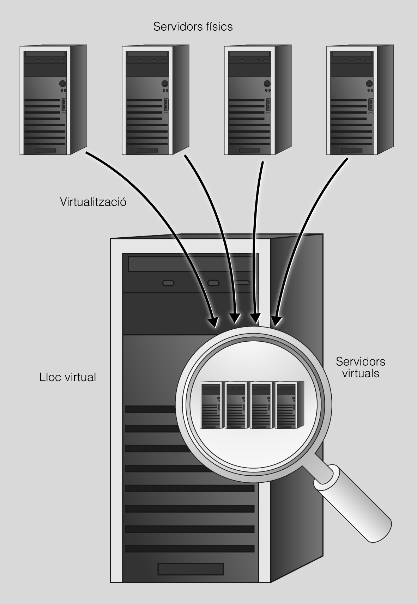

06| Servidores virtuales
Cuando hablamos de la creación de sitios virtuales nos referimos a la acción de hacer funcionar más de un sitio web, por ejemplo, las páginas web www.web1.cat y www.web2.cat en un único ordenador.
Tal como muestra la siguiente figura, aunque ambos dominios estén funcionando en la misma máquina física, nunca nos daremos cuenta cuando visitamos estos sitios web.

Los sitios web virtuales pueden basarse tanto en direcciones de Internet (IP), donde cada sitio web tiene una dirección de Internet (IP) diferente, como en nombres diferentes, es decir, varios sitios web con diferentes nombres de dominio estarán funcionando con una única dirección de Internet (IP). Cabe destacar que, aunque estemos trabajando en la misma máquina física, como usuarios no percibiremos esta diferencia al visitar estos sitios web.
Para explicar la técnica de la creación de sitios web virtuales, trabajaremos con dos ejemplos: www.aplicacionesweb.org y www.serveisenxarxa.org.
Ambos sitios web virtuales serán servidos por el mismo servidor web. El directorio por defecto donde se encuentran las páginas web es /var/www, donde crearemos las diferentes estructuras de directorio. Por lo tanto, dentro de los directorios /var/www/aplicacionesweb y /var/www/seveisenxarxa encontraremos los archivos de los sitios web correspondientes a las páginas web anteriores.
Para la configuración y puesta en marcha de los sitios web virtuales, primero debemos construir la estructura de directorios donde almacenaremos los sitios. Dentro del directorio reservado a cada sitio web, utilizaremos la carpeta public_html para alojar los archivos del sitio web.
Una vez definidos los directorios donde almacenaremos los sitios web virtuales, debemos dirigirnos al directorio /etc/apache2, donde encontraremos los archivos de configuración de Apache. En este caso, el archivo principal de configuración es apache2.conf.
Considerando que para trabajar con los sitios virtuales debemos realizar algunos cambios en el contenido del archivo, es importante definir previamente qué tipo de configuración de sitios web virtuales queremos crear, es decir, sitios virtuales basados en direcciones de Internet (IP) o bien basados en nombres.
Servidores virtuales en Apache
Apache2 se entrega con una configuración predeterminada virtual-host-friendly. Es decir, está configurado con un único host virtual predeterminado (utilizando la directiva VirtualHost) que se puede modificar o utilizar como si tuviera un solo sitio o como plantilla para servidores virtuales adicionales si tienes varios sitios. Si se deja tal cual, el anfitrión virtual predeterminado servirá como sitio por defecto o los usuarios verán este sitio si la URL que introducen no coincide con la directiva ServerName de ninguno de sus sitios personalizados. Para modificar el servidor virtual predeterminado, edita el archivo /etc/apache2/sites-available/000-default.conf.
Si deseas configurar un nuevo host virtual o sitio, copia estos archivos en el mismo directorio con el nombre que elijas. Por ejemplo:
sudo cp /etc/apache2/sites-available/000-default.conf /etc/apache2/sites-available/misitio.confLa configuración por defecto es la siguiente:
<VirtualHost *:80>
# La directiva ServerName establece el esquema de solicitud, el nombre de host y el puerto
# que el servidor usa para identificarse. Se usa al crear URLs de redirección.
# Para hosts virtuales, ServerName especifica qué nombre de host debe aparecer en la
# cabecera Host: de la solicitud para coincidir con este host virtual.
# Para el host virtual predeterminado, este valor no es decisivo ya que se usa como
# último recurso.
#ServerName www.example.com
ServerAdmin webmaster@localhost
DocumentRoot /var/www/html
# Niveles de log disponibles: trace8, ..., trace1, debug, info, notice, warn,
# error, crit, alert, emerg.
# También es posible configurar el nivel de log para módulos específicos.
#LogLevel info ssl:warn
ErrorLog ${APACHE_LOG_DIR}/error.log
CustomLog ${APACHE_LOG_DIR}/access.log combined
# Para la mayoría de los archivos de configuración en conf-available/
# que se activan o desactivan globalmente, es posible incluir
# una línea para un host virtual en particular. Por ejemplo:
#Include conf-available/serve-cgi-bin.conf
</VirtualHost>
# vim: syntax=apache ts=4 sw=4 sts=4 sr noetUna vez realizados los cambios, activaremos el sitio web con el comando a2ensite:
sudo a2ensite misitioLuego, recargaremos la configuración de Apache2 con el siguiente comando:
sudo service apache2 reloadPara depurar errores en los archivos de configuración de sitios virtuales, usa:
sudo apache2ctl -tSitios virtuales basados en la dirección de Internet (IP)
En este caso, podemos alojar múltiples dominios en una única máquina que dispondrá de diferentes direcciones de Internet (IP) y, en cada una de ellas, se ejecutará un sitio virtual.
Debemos cambiar la directiva <VirtualHost *:80> para especificar a qué dirección IP debe responder. Por ejemplo, <VirtualHost 192.168.2.112:80> si debe responder a la dirección IP 192.168.2.112.
<VirtualHost 192.168.2.112:80>
DocumentRoot "/var/www/serveisenxarxa/public_html"
</VirtualHost>Sitios virtuales basados en el nombre de dominio
El problema de los sitios web virtuales basados en direcciones de Internet (IP) es que, considerando que se alojan muchos dominios, necesitaremos una dirección de Internet (IP) para cada uno de los dominios. Por lo tanto, puede ser preferible trabajar con sitios virtuales basados en nombres. En este caso, después de copiar el archivo de configuración por defecto, debemos agregar la directiva ServerName ya que, aunque los sitios virtuales se encuentren en la misma IP, se debe cambiar el nombre para cada uno de los sitios. En el caso de trabajar con un servidor DNS, este deberá estar configurado para resolver estos sitios en las zonas correspondientes. Además, se debe definir la directiva DocumentRoot para indicar desde qué directorio se servirán las páginas. Esta sería la configuración para el sitio www.serveisenxarxa.org:
<VirtualHost *:80>
ServerName www.serveisenxarxa.org
DocumentRoot "/var/www/serveisenxarxa/public_html"
</VirtualHost>Finalmente, para verificar que todos los cambios aplicados han tenido éxito, reiniciaremos el servidor web.
Obra publicada con Licencia Creative Commons Reconocimiento Compartir igual 4.0